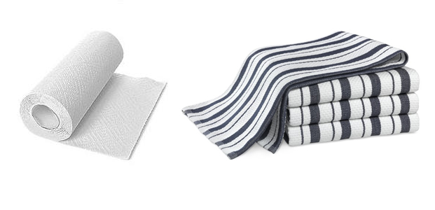
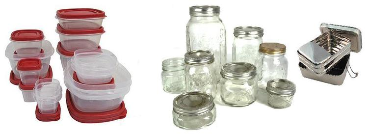
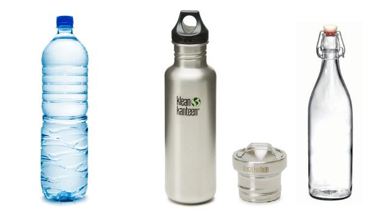
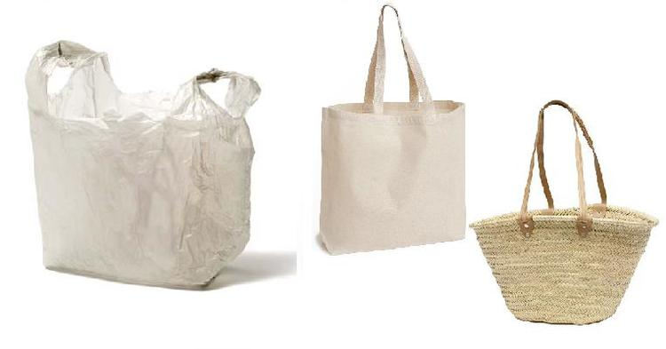
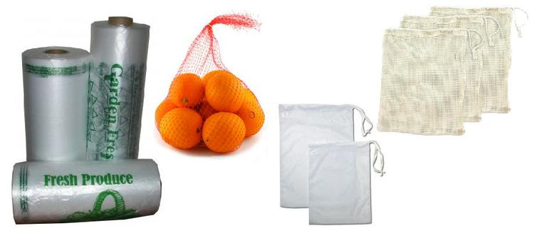
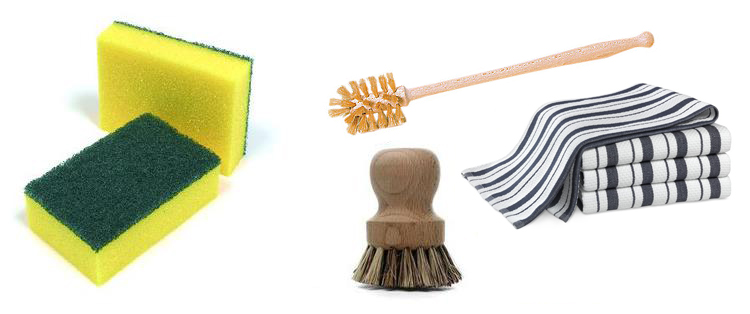
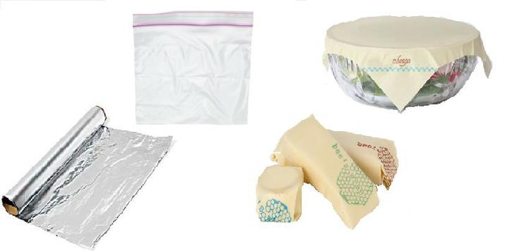
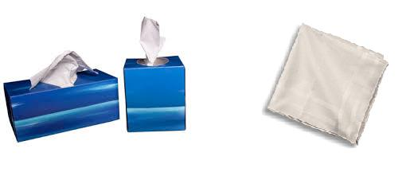
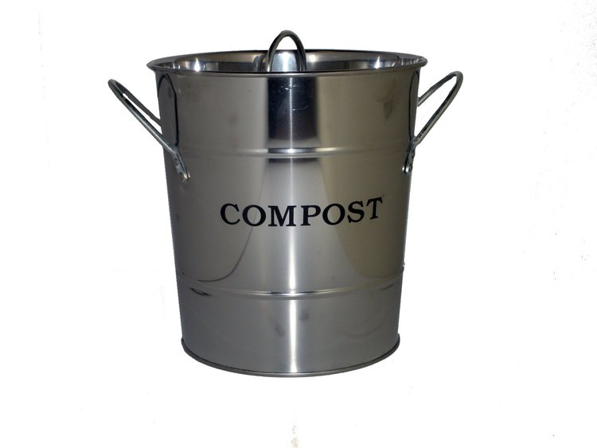

Top 10 to Get Started
-
number one :
I used to hate drying dishes. My dish towels were never up to the task; water was spread rather than absorbed. With these woven cotton cloths I can accomplish loads of chores. Dusting - you bet. Kitchen counters - a breeze. Drying dishes - absolutely! Wrapping a sandwich to go - of course. There are so many uses for good dish towels.
-
number two :
Have you ever left spaghetti in plastic tupperware? After a couple of hours the plastic is tinged red where the sauce has leached into the walls? The reverse happens as well. When you store food in plastic, especially if it's heated, this plastic wall will leach into your food. BPA free isn't safe either. Opt for glass or stainless not only are they two of the most recyclable products, but you don't have to worry about contamination. I love my metal tiffins. They're light weight, sturdy, and you don't have to worry about them breaking.
-
number three :
We're all very aware that plastic bottles are one of the most prevalent items in landfills. They have an incredibly low recycle rate and can only be downcycled. They will always wind up in a landfill. Here are some fun facts. They're also one of the easiest items to replace in your day to day life. It takes 3 liters of water to make .5 liter of bottle water. It's an unsustainable and unregulated practice. Get used to your tap water and refill a reusable bottle. There are a lot of attractive glass and stainless options. You can buy a stainless or bamboo cap for you Klean Kanteen. I found mine at a thrift store for $2.00 and ordered a shiny new bamboo cap.
-
number four :
There's an overwhelming amount of plastic bags in landfills and waterways. They're incredibly wasteful and put marine wildlife in danger. It's a really easy switch. The hardest part is remembering to bring them with you. Try to keep them in the trunk of your car. Some stores give you cash back for bringing them, and there's no better incentive than that.
-
number five :
Even produce can't escape endless plastic. Spinach comes in plastic bags or boxes, oranges come in mesh, thin plastic produce bags at every corner, and stickers are stamped on every loose item. The farmers market is the best way to avoid these things. If you don't have access to a farmers market, you should bring your own produce bags and avoid prepackaged goods. It's very simple to sew your own; I used 100% cotton pillowcases from the thrift store. Or you can purchase them on Life Without Plastic.
-
number six :
Sponges are a magnet for bacteria, but so are rags. Bacteria like to grow in warm, damp environments. The brush is the most sanitary, but sometimes it's difficult to get a brush inside of a jar. I like to use rags for those hard to reach places. If you wash the rags regularly and line dry them, the heat from the sun will kill the bacteria and naturally brighten them. All of these things will need to be replaced eventually. The brushes are compostable/recyclable. I'm also interested in trying to grow loofas.
-
number seven :

You're supposed to change your toothbrush every 3 months. Over a decade one person will send 40 toothbrushes to a landfill. Fortunately there are many bamboo alternatives you can compost.
-
number eight :
Aluminum foil was the hardest thing for me to give up. Fortunately they make reusable products that act like foil or cling wrap. Companies like abeego sell a moldable waxed fabric used for preservation. You can also make your own. The Egyptians were the first to use this technique. You can also use a silicone mat for lining your pans when baking at high temperatures. Ore use them for freezing.
-
number nine :
It's great for drying your hands in public restrooms, unexpected tears, wrapping up treats, and of course the sniffles. I found several frilly ones at a garage sale for a quarter and package free. Unlike tissues, I don't find my nose chaffing after several uses.
-
number ten :
Composting is probably the most important step of all. I found that 80% of everything I threw away could be composted. You may have municipal compost, but you can also make a backyard compost. Finding the right one for you may be a challenge, but well worth the effort. Food can't break down in landfills. Newspapers from 50 years ago are still legible; hotdogs are perfectly preserved. Air can't circulate properly to let natural things decompose.